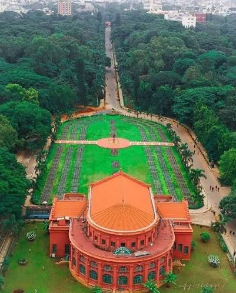
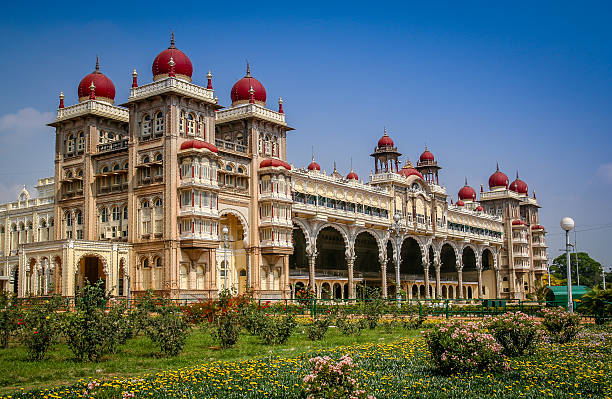
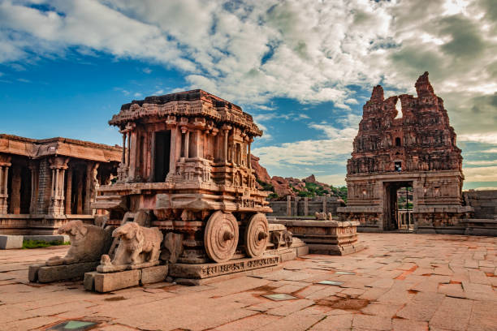
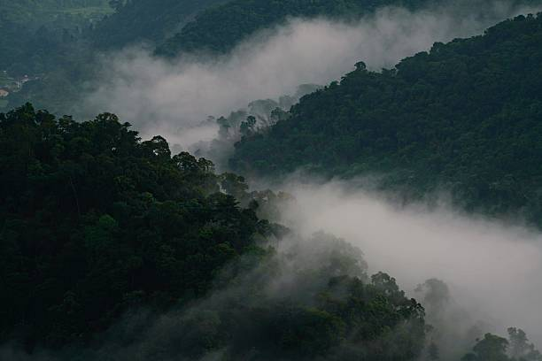
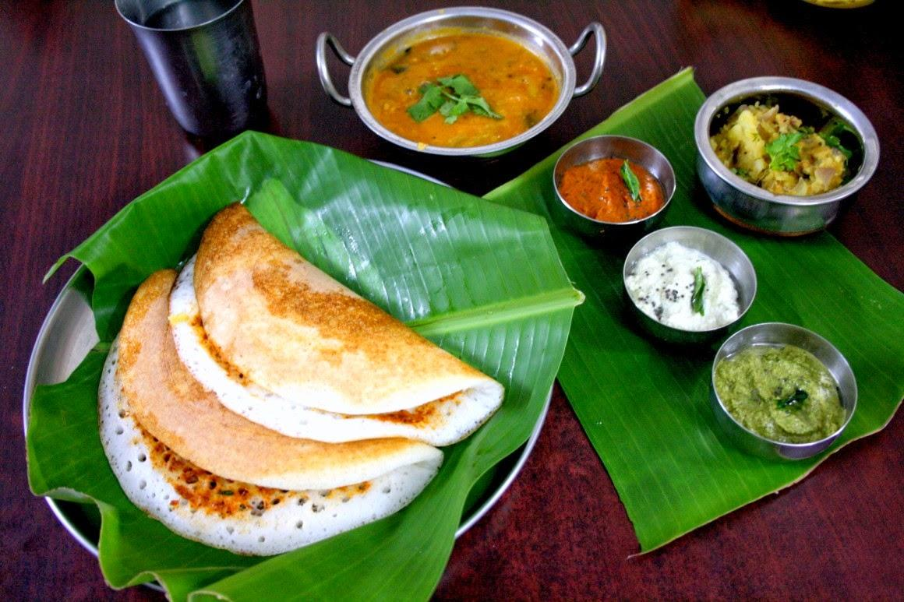

01
Bengaluru
India's Silicon Valley & Garden City — famous for neo-Dravidian Vidhana Soudha, Lalbagh Botanical Garden, and craft brew cafes.

Discover monumental Vijayanagara empire ruins, opulent Wadiyar royal palaces, fragrant Western Ghats coffee estates, tech-driven metropolis avenues, and rich Kannada traditions.
Explore Karnataka ↓Karnataka is a diverse southern state that bridges ancient architectural empires with India's vanguard of space technology and modern enterprise.
From the illuminated royal splendor of Mysuru Palace and the boulder-strewn stone monuments of Hampi to the misty coffee plantations of Coorg and the cosmopolitan garden boulevards of Bengaluru, Karnataka offers endless wonder.
Celebrated historic cities, hill sanctuaries, and UNESCO ancient ruins across Karnataka.

India's Silicon Valley & Garden City — famous for neo-Dravidian Vidhana Soudha, Lalbagh Botanical Garden, and craft brew cafes.

City of Palaces — celebrated for the Indo-Saracenic Mysore Palace, Chamundi Hills, sandalwood aromas, and royal Dasara festival.

UNESCO World Heritage site — the boulder-strewn capital of the Vijayanagara Empire, featuring the iconic Stone Chariot and Virupaksha Temple.

Scotland of India — mist-kissed Western Ghats slopes famous for lush coffee plantations, Abbey Falls, and unique Kodava martial culture.
Karnataka's cuisine ranges from aromatic Udupi vegetarian feasts and butter dosas to spicy coastal Mangalorean seafood and hearty ragi staples.

A majestic classical coastal theatre combining vibrant face paint, elaborate costumes, high-tempo Chande drumming, and dialogue.
A 400-year-old royal state festival celebrated with illuminated palace arches, cultural arts, and the grand Jumbo Savari elephant parade.
Intricate UNESCO star-shaped stone temples of Belur, Halebidu, and rock-cut cave architectures of Badami and Pattadakal.
Centuries-old GI-tagged artisanal heritage including fine Mysore silk weaving with pure gold zari and fragrant Mysore sandalwood carvings.
Discover all 28 states, local food specialties, and centuries of living traditions.
← Back to All States